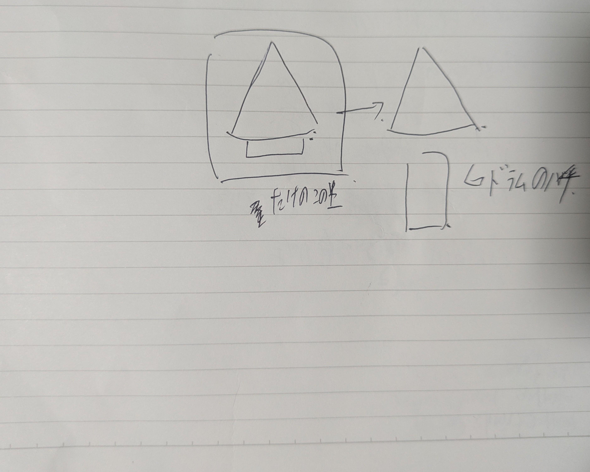

相手のための設計
自分の作りたい形ではなく、相手にとってどう感じられるかを起点に考える姿勢をテーマにしています。
 Digital Fabrication
第3回
Digital Fabrication
第3回
Session 3
誰かのために設計するという視点から、アイデアとビジュアルの方向性を探っている途中段階のページです。 完成前の検討過程も含めて、制作の流れが見えるように整理しました。
Process
完成形だけでなく、考え方の途中経過を見せることで、制作の方向性や意図がより分かりやすくなります。
自分の作りたい形ではなく、相手にとってどう感じられるかを起点に考える姿勢をテーマにしています。
途中段階のメモや素材も残すことで、アイデアがどう発展していくのかを読み取れるページにしました。
Visual

方向性を探っている段階の素材を、そのまま見られる形で残しています。